Gallery#
Every plot of the package. Hover over a figure to see what it shows, and
click it to see the code that draws it (the names in the code link to their
documentation). The figures are drawn from the example data in tests/data
(one mouse, NUO003) by the current code each time this documentation is
built.
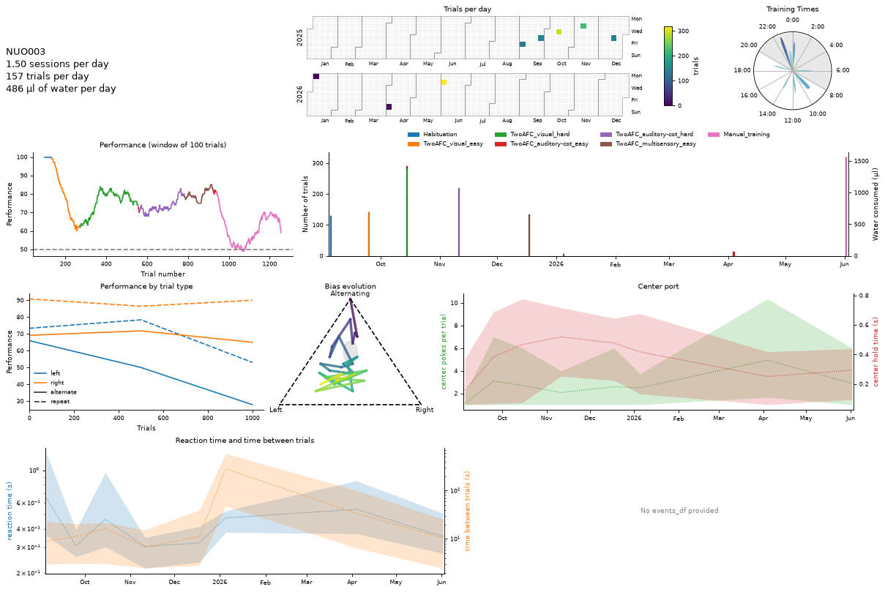
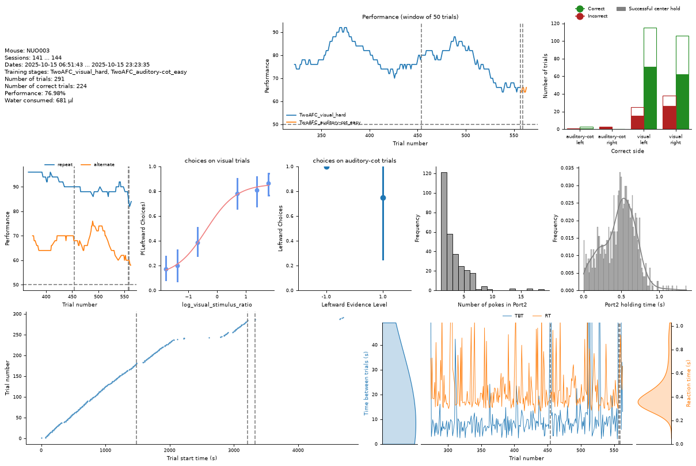

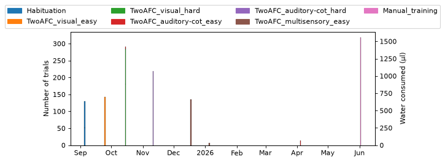
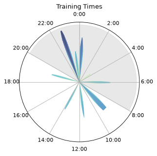
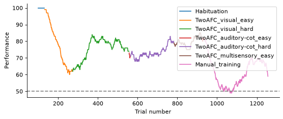

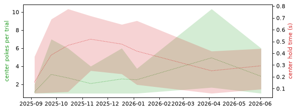

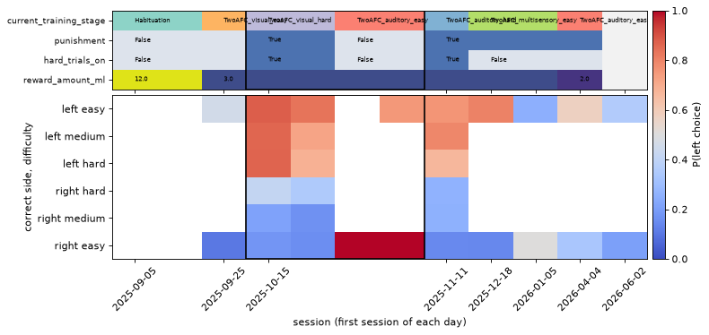


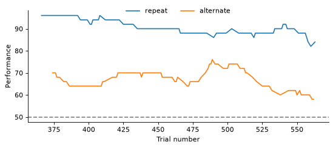
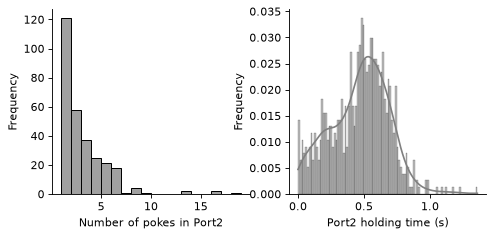


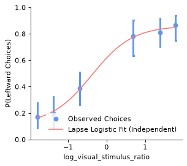

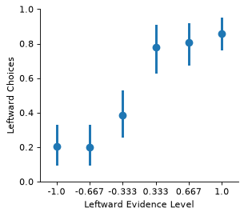
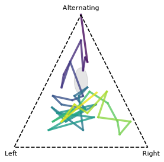
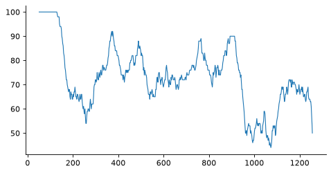
interactive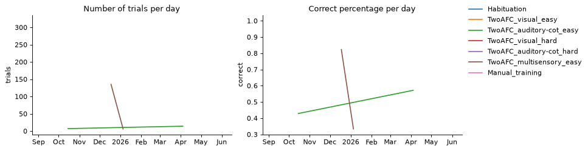
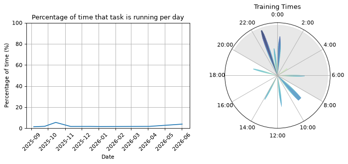
The inputs of the examples#
Every example draws from three inputs. With your data:
import pandas as pd
from lecilab_behavior_analysis.io.loading import load_project_logs, load_project_trials
# the trials of a mouse, prepared for analysis (and its performance through trials)
trials = load_project_trials("COT_cannula_data", ["NUO003"])
# its trials of one day
day = trials[trials["year_month_day"] == "2025-10-15"]
# the sessions summaries of the project's setups (with the settings of each session)
_, summary, _ = load_project_logs("COT_cannula_data")
The tutorial goes through these step by step.